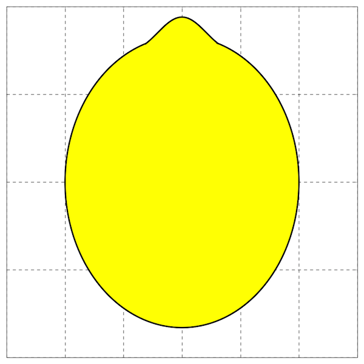
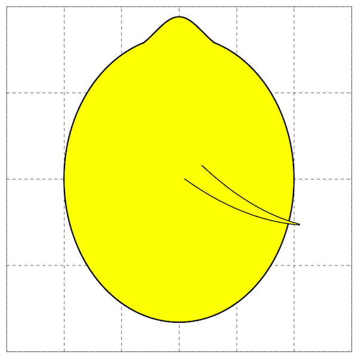
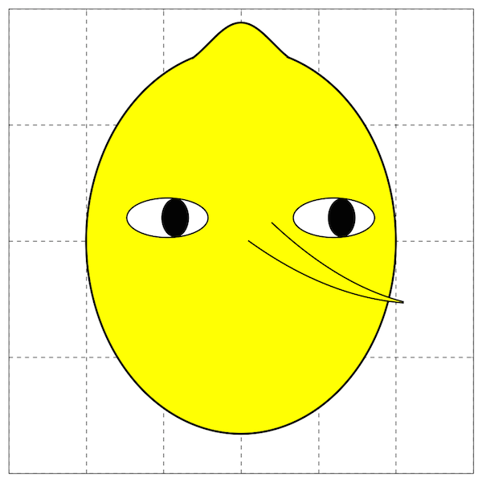
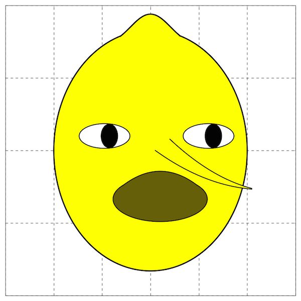
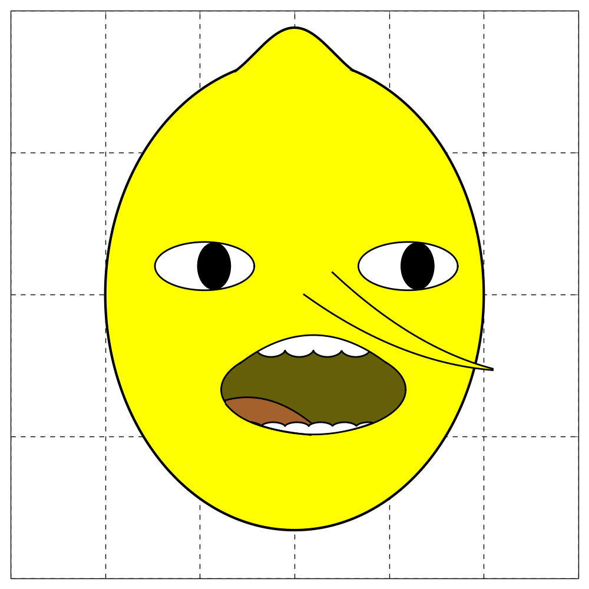

The plot setup:
import numpy as np from matplotlib import pyplot as plt fig = plt.figure(figsize=(10,10)) ax = fig.add_subplot(111) ax.set_xlim([-60,60]) ax.set_ylim([-100,100]) ax.set_axisbelow(True) ax.grid(color='k', linestyle='--', linewidth=1) ax.set_xticklabels([]) ax.set_yticklabels([])Great. Now we give him a head:
width, height = 80, 166 theta = np.arange(0.0, 360.0, 1.0)*np.pi/180.0 head_x = 0.5 * width * np.cos(theta) head_y = 0.5 * height * np.sin(theta) ax.fill(head_x, head_y, facecolor='yellow', edgecolor='black', linewidth=3, zorder=1) bump_x = np.arange(-12.5, 12.4, 0.1) bump_y = 9*np.cos(bump_x/(1.7*np.pi))+85 ax.plot(bump_x, bump_y, 'k', linewidth=3) ax.fill(bump_x, bump_y, facecolor='yellow', edgecolor='black', linewidth=0, zorder=1)
Next, a nose:
nose_x = np.arange(8, 42, 0.1) nose_top_y = (nose_x-55)**2/60 - 29 nose_bottom_y = (nose_x-47)**2/75 - 27 ax.plot(nose_x,nose_top_y, 'k', linewidth=2) ax.plot(nose_x,nose_bottom_y, 'k', linewidth=2) nose_extra_x = np.arange(2, 8, 0.1) nose_extra_y = (nose_extra_x-47)**2/75 - 27 ax.plot(nose_extra_x, nose_extra_y, 'k', linewidth=2) ax.fill_between(nose_x, nose_top_y, nose_bottom_y, facecolor='yellow', edgecolor='black', linewidth=0, zorder=2)
Next, eyes:
# Whites width, height = 21, 17 left_eye_x = 0.5 * width * np.cos(theta) - 19 left_eye_y = 0.5 * height * np.sin(theta) + 10 ax.fill(left_eye_x, left_eye_y, facecolor='white', edgecolor='black', linewidth=0, zorder=1) ax.plot(left_eye_x, left_eye_y, 'k', linewidth=2) right_eye_x = 0.5 * width * np.cos(theta) + 24 right_eye_y = 0.5 * height * np.sin(theta) + 10 ax.fill(right_eye_x, right_eye_y, facecolor='white', edgecolor='black', linewidth=0, zorder=1) ax.plot(right_eye_x, right_eye_y, 'k', linewidth=2) # Pupils width, height = 7, 16.5 left_pupil_x = 0.5 * width * np.cos(theta) - 17 left_pupil_y = 0.5 * height * np.sin(theta) + 10 ax.plot(left_pupil_x, left_pupil_y, 'k') ax.fill(left_pupil_x, left_pupil_y, facecolor='black', edgecolor='black', linewidth=0, zorder=1) right_pupil_x = 0.5 * width * np.cos(theta) + 26 right_pupil_y = 0.5 * height * np.sin(theta) + 10 ax.plot(right_pupil_x, right_pupil_y, 'k') ax.fill(right_pupil_x, right_pupil_y, facecolor='black', edgecolor='black', linewidth=0, zorder=1)
Mouth:
mouth_x = np.arange(-11.5, 19.5, 0.1) mouth_top_y = -((mouth_x-4)/1.1)**2/20 - 14.3 mouth_bottom_y = (mouth_x-4)**0-34 ax.plot(mouth_x,mouth_top_y, 'k', linewidth=2, zorder=3) ax.plot(mouth_x,mouth_bottom_y, 'k', linewidth=0) ax.fill_between(mouth_x, mouth_top_y, mouth_bottom_y, facecolor='#665f09', edgecolor='black', linewidth=0, zorder=3) width, height = 39, 31 mouth_fill_x = 0.5 * width * np.cos(theta) + 4 mouth_fill_y = 0.5 * height * np.sin(theta) - 33.5 ax.plot(mouth_fill_x, mouth_fill_y, 'k', linewidth=2) ax.fill(mouth_fill_x, mouth_fill_y, facecolor='#665f09', linewidth=0, zorder=1)
Almost there! Now to give him a tongue and teeth:
# Top teeth teeth_top_x = np.arange(-7.8, 15.8, 0.1) teeth_top_y = -5*np.absolute(np.cos((teeth_top_x-1)/1.9))**0.5*0.5 - 19.5 ax.plot(teeth_top_x,teeth_top_y, 'k', zorder=4, linewidth=2) teeth_top_fill = -((teeth_top_x-4)/1.1)**2/20 - 14.3 ax.fill_between(teeth_top_x, teeth_top_fill, teeth_top_y, facecolor='white', edgecolor='black', linewidth=0, zorder=3) # Tongue tongue_x = np.arange(-14.5, 3.5, 0.1) tongue_y = -(tongue_x+10)**2/20 - 36.5 ax.plot(tongue_x, tongue_y, 'k', linewidth=4) tongue_fill = 115/(tongue_x + 22) - 54 ax.plot(tongue_x, tongue_fill, 'k', linewidth=2, zorder=4) ax.fill_between(tongue_x, tongue_y, tongue_fill, facecolor='#a3622d', edgecolor='black', linewidth=0, zorder=4) # Bottom teeth teeth_bottom_x = np.arange(-9, 16.5, 0.1) teeth_bottom_y = 1.5*np.absolute(np.cos((teeth_bottom_x-0.5)/1.6))**0.5-46.5 ax.plot(teeth_bottom_x, teeth_bottom_y, 'k', zorder=4, linewidth=2) teeth_bottom_fill = ((teeth_bottom_x-4)/1.1)**2/32 - 49.3 ax.plot(teeth_bottom_x, teeth_bottom_fill, 'k', linewidth=2, zorder=4) ax.fill_between(teeth_bottom_x, teeth_bottom_y, teeth_bottom_fill, facecolor='white', edgecolor='black',linewidth=0, zorder=4)